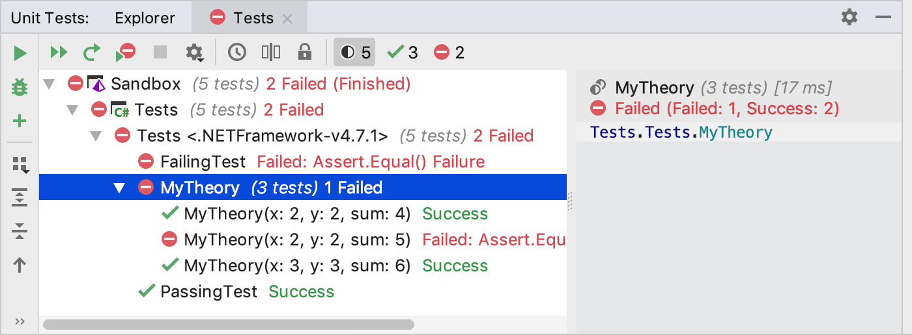

In this article, we will demonstrate getting started with xUnit.net using JetBrains Rider. These instructions apply to all JetBrains Rider supported platforms (macOS, Linux, and Windows).
Note: The examples were done with xUnit.net v2.4 and JetBrains Rider 2018.3 on macOS. The version numbers, paths, and JetBrains Rider UI may differ for you, depending on which version you're using.
In our example, we have a solution with a single project called Sandbox, which has a class that implements a primitive calculator.
{% highlight C# %} namespace Sandbox { public class Calculator { public static int Add(int x, int y) => x + y; public static int Subtract(int x, int y) => x - y; } } {% endhighlight %}
To test our calculator, let's start by creating a project for our xUnit.net tests.
In the Solution Explorer, right-click the solution and choose Add > New Project...:
Choose the Unit Test Project template targeting .NET 4.5.2 or later,
select xUnit as the project type,
and provide some telling name for it, e.g. Tests.

When you click Create,
the new test project with all necessary configurations and references will be added to our solution.
When you created the test project, JetBrains Rider automatically created a file named Tests.cs
with a stub for our first test and opened it for you.
Let's edit the test stub to target our calculator class:
Note: If you copy-pasted the above code to the Tests.cs file, the Calculator
usage will be highlighted as unresolved because the
Sandbox project is not referenced in our test project. You can press
Alt+Enter on the highlighted usage to add the missing project reference.
Build the solution to ensure that the code compiles. Now that you've written
the first tests, let's run them.
You can click the unit test icon next to the test class and choose
Run All to run all tests in that class.

Rider will start the tests and bring up the Unit Tests window where you can see test status and results.

As expected, the PassingTest has passed and the FailingTest has failed.
You may have wondered why your first unit tests use an attribute named
[Fact] rather than one with a more traditional name like Test.
xUnit.net includes support for two different major types of unit tests:
facts and theories. When describing the difference between facts and theories,
we like to say:
Facts are tests which are always true. They test invariant conditions.
Theories are tests which are only true for a particular set of data.
So you will need a theory to write a data-driven test — a test that can work with multiple data sets. For example, we can test our calculator with different input values and expected sums. Note that feeding an incorrect sum value into such test would cause it fail, and not because the calculator or test is wrong.
Let's add a theory to our existing facts (including a bit of bad data, so we can see it fail):
{% highlight C# %} [Theory] [InlineData(2, 2, 4)] [InlineData(3, 3, 6)] [InlineData(2, 2, 5)] public void MyTheory(int x, int y, int sum) { Assert.Equal(sum, Calculator.Add(x, y)); } {% endhighlight %}This time when we run our tests, we see a failure for our theory when it was given a sum of 5 for 2 and 2:

Although we've only written 3 test methods, the test runner actually ran 5 tests; that's because each theory with its data set is a separate test. Note also that the runner tells you exactly which set of data failed, because it displays the argument values.
As you write more tests, you may end up having a lot of files or directories in your test project,
or you can even have multiple test projects in your solution.
In such situation, using editor controls (as demonstrated above)
will not be the most convenient way to run multiple tests.
Instead, you can locate a solution, project, or any node containing unit tests in the Solution Explorer,
right-click on it and choose
Run Unit Tests.
Or alternatively, you can browse all tests in the solution on the Explorer tab of the Unit Tests window
and run tests from there.